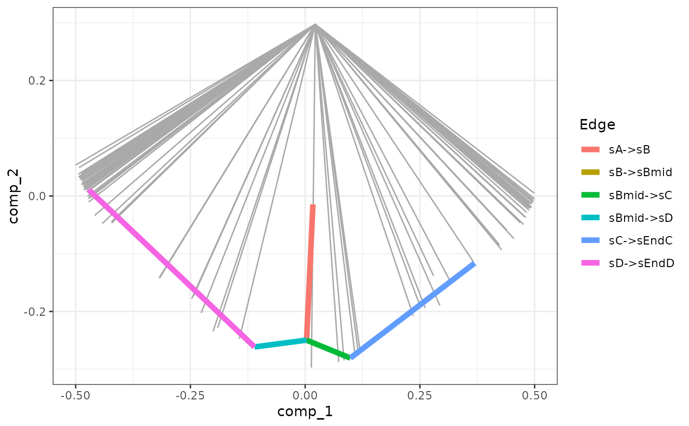
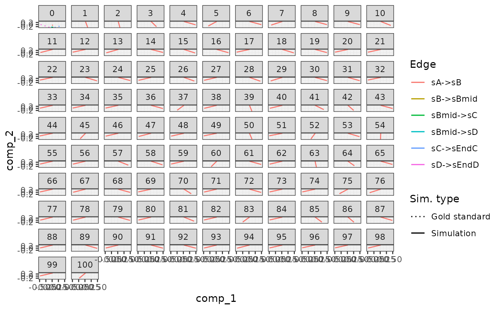
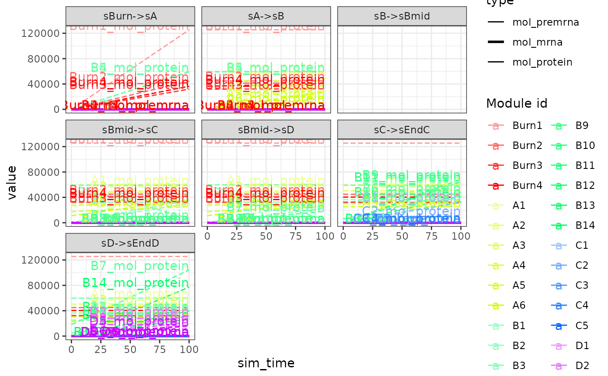

generate_gold_standard() runs simulations in order to determine the gold standard
of the simulations.
gold_standard_default() is used to configure parameters pertaining this process.
generate_gold_standard(model) gold_standard_default( tau = 30/3600, census_interval = 10/60, simulate_targets = FALSE )
| model | A dyngen intermediary model for which the kinetics of the feature network has been generated with |
|---|---|
| tau | The time step of the ODE algorithm used to generate the gold standard. |
| census_interval | A granularity parameter of the gold standard time steps. Should be larger than or equal to |
| simulate_targets | Also simulate the targets during the gold standard simulation |
A dyngen model.
model <- initialise_model( backbone = backbone_bifurcating(), gold_standard = gold_standard_default(tau = .01, census_interval = 1) ) # \dontshow{ # actually use a smaller example # to reduce execution time during # testing of the examples model <- initialise_model( backbone = model$backbone, num_cells = 5, num_targets = 0, num_hks = 0, gold_standard_params = gold_standard_default(census_interval = 1, tau = 0.1), simulation_params = simulation_default( burn_time = 10, total_time = 10, census_interval = 1, ssa_algorithm = ssa_etl(tau = 0.1), experiment_params = simulation_type_wild_type(num_simulations = 1) ) ) # } # \donttest{ model <- model %>% generate_tf_network() %>% generate_feature_network() %>% generate_kinetics() %>% generate_gold_standard() %>% generate_cells() %>% generate_experiment#> Generating TF network #> Sampling feature network from real network #> Generating kinetics for 35 features #> Generating formulae #> Generating gold standard mod changes #> Precompiling reactions for gold standard #> Running gold simulations #> | | 0 % elapsed=00s |======== | 14% elapsed=00s, remaining~00s |=============== | 29% elapsed=00s, remaining~00s |====================== | 43% elapsed=00s, remaining~00s |============================= | 57% elapsed=00s, remaining~00s |==================================== | 71% elapsed=00s, remaining~00s |=========================================== | 86% elapsed=00s, remaining~00s |==================================================| 100% elapsed=00s, remaining~00s #> Precompiling reactions for simulations #> Running 1 simulations #> Mapping simulations to gold standard#> Warning: Simulation does not contain all gold standard edges. This simulation likely suffers from bad kinetics; choose a different seed and rerun.#> Performing dimred #> Simulating experiment